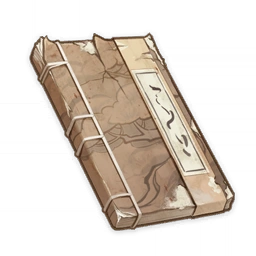

Teyvat & Unknown · Books & Literature
Someone's Diary
This six-volume collection follows the unnamed father of Dongdong from Qingce Village. His boastful letter to his son is undercut by the later diary entries, which record a string of awkward travels through Liyue and Inazuma.

A letter and the diary behind it
The collection has six volumes, found from Qingce Village and other parts of Liyue to Jinren Island in Inazuma. Its writer is not given a name. The first volume identifies him as Dongdong’s father and presents a letter meant to reassure his son while he is away.
That letter reads like a heroic travel story. The diary volumes that follow gradually show what really happened, so the contrast between the two accounts is the collection’s central joke.
Volumes I–III: the boasts unravel
In Volume I the father claims to have gathered a fortune in golden sand at Yaoguang Shoal, torn the head from a Ruin Guard at Guili Plains, and received an inexhaustible wine bottle from an adeptus at Jueyun Karst. These are promises and embellishments in a letter to a child, not reliable historical testimony.
Volume II reveals that his gold-panning information was outdated and he became lost in fog before hilichurls surrounded him. In Volume III he escapes, encounters a Ruin Guard, is thrown off a cliff, and survives with an injured arm. The real machine was not defeated as the letter claims.
Volumes IV–V: a bottle and a gamble
A herb gatherer helps set the father’s broken arm in Volume IV. On the way down the mountain he finds an ordinary old bottle, rinses it with spring water, and decides to tell Dongdong that an adeptus gave it to him. The story explains the supposed magic bottle without requiring supernatural intervention.
In Liyue Harbor, Volume V has him sell herbs and clear his debts, then risk his savings at Shitou’s Jade Mystery. He wins jade but struggles to carry it, pawns his belongings, and considers asking Captain Beidou for work aboard the Crux. The entry records a plan, not a confirmed hiring.
Volume VI: stranded in Inazuma
The last volume begins on Jinren Island. The diarist has stolen a small boat from pirates and rowed for three days. He recognizes Narukami Island’s mountain and the Sacred Sakura, and the sight makes him think of home and Dongdong.
He plans to walk toward Inazuma City, find steady employment, and bring Dongdong to live with him once he can afford a house. The collection ends before it tells us whether he manages to reunite with his son.
The later event and the unresolved rescuer
The Echoing Tales event’s Conch Retrospection episode “Unlucky Father” shows that the traveler later reaches the Golden Apple Archipelago, is captured by hilichurls, and is rescued by an unidentified person. This adds another chapter to his wandering after Volume VI.
The game does not identify the rescuer. Alice is a plausible community theory because she is also associated with the archipelago, but the theory should not be presented as canon. The diary’s writer likewise remains unnamed beyond his connection to Dongdong.
This is an original CoreGG reading guide, not an official HoYoverse article or a reproduction of the game text. Source links below identify the records used so you can check the original context.
Sources & references
Check these sources for the original game text and reference trail.